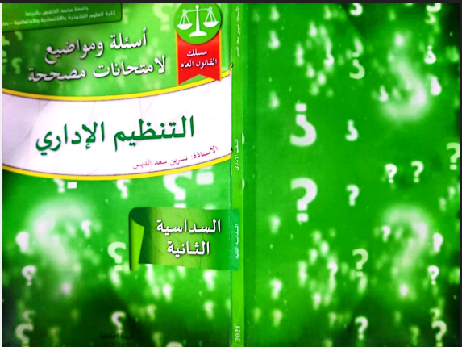
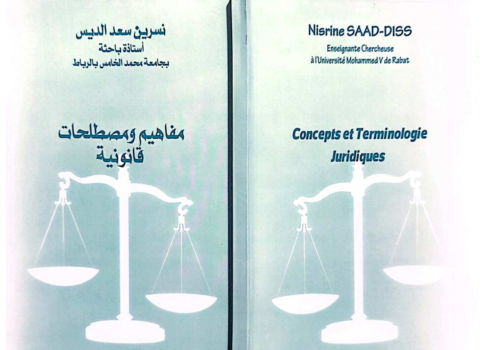

الأستاذة نسرين سعد الديس
حقيبة قانونية
ندوات
السيرة الذاتية
دروس
الرئيسية
كتب و مراجع
كتب
اطروحات و مقالات
حقيبة الحكامة
حقيبة الوظائف العليا
كتب
أسئلة و مواضيع لامتحانات مصححة: التنظيم الإداري

مفاهيم و مصطلحات قانونية

و يسألونك عن الإدارة
اختصاصات الجماعات الترابية على ضوء القوانين التنظيمية
اطروحات و مقالات
علاقة الهيئات المنتخبة بهيئات الحكامة
الوالي و العامل و التنمية المحلية بالمغرب
العامل و صلاحية التنسيق في ضوء الميثاق الوطني للاتمركز الاداري
حقيبة الحكامة
الحكامة الجيدة
الحكم الرشيد الأبعاد والمعايير والمتطلبات
التأصيل النظري للحكامة
الحكامة، الجودة المؤسساتية والتنمية الاقتصادية: ما هي الدروس التي استخلصها المغرب؟
Une approche historique de la gouvernance pour éclairer la gestion concertée de l’eau en France
حقيبة الوظائف العليا
الحكامة الجيدة
الحكم الرشيد الأبعاد والمعايير والمتطلبات
التأصيل النظري للحكامة
الحكامة، الجودة المؤسساتية والتنمية الاقتصادية: ما هي الدروس التي استخلصها المغرب؟
Une approche historique de la gouvernance pour éclairer la gestion concertée de l’eau en France